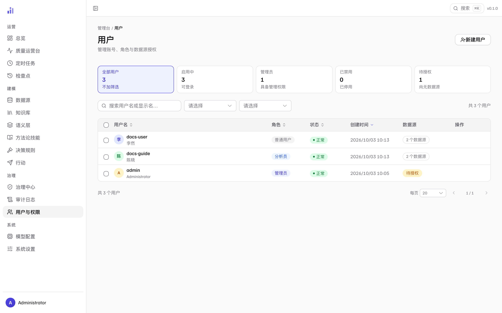
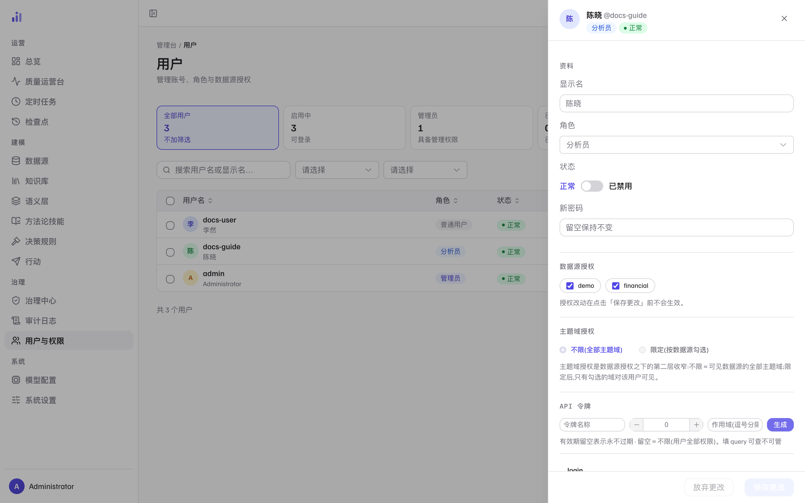
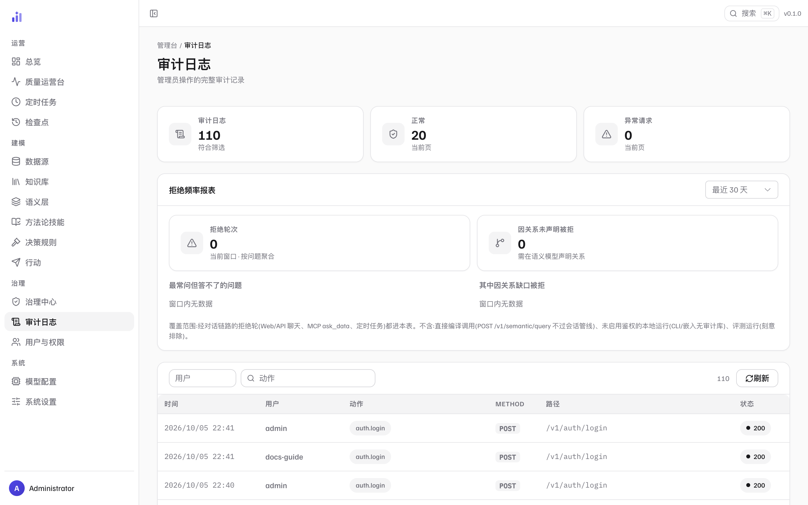
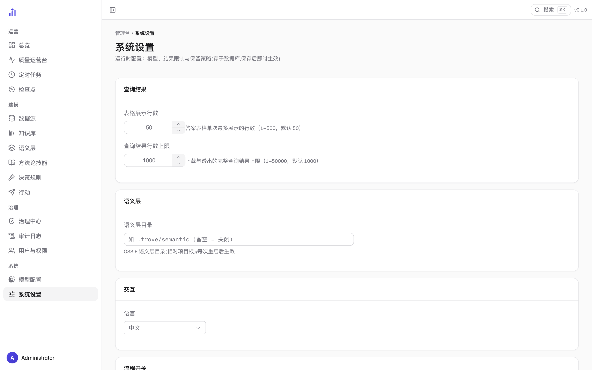
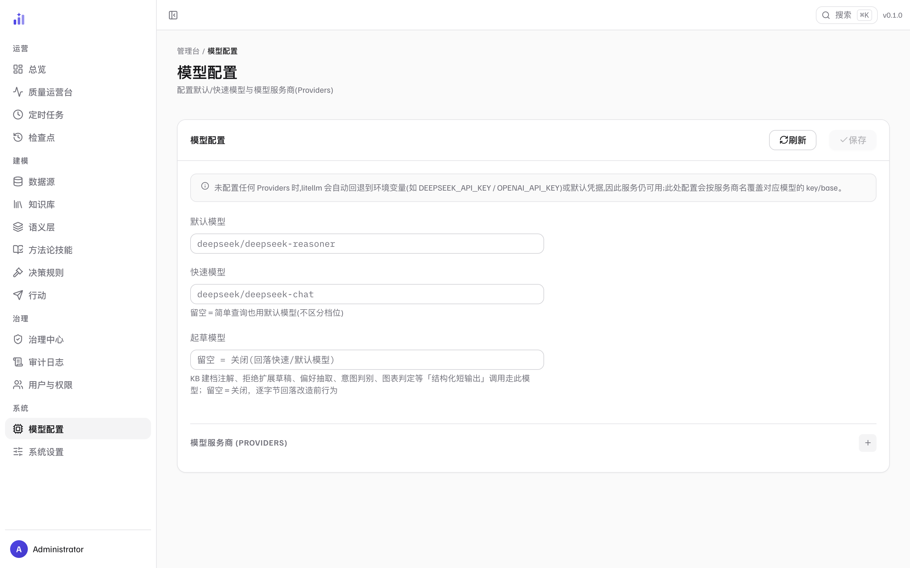
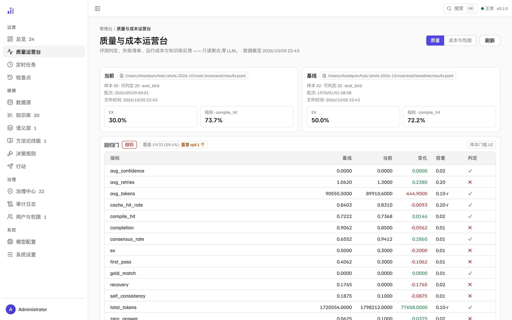

用户·权限·安全
谁可以用、能用到什么、做过什么、平台自身怎么配置——四件事一条线： 账号与授权（用户页）、行为留痕（审计日志）、 运行时配置（系统设置、模型配置），以及给管理员的 质量与成本运营台。
账号与授权
/admin/users 管账号、角色与数据源授权。三种角色：
管理员（全部管理权限）、分析员（可触达目录枚举工具等增强能力）、
普通用户（问答基本盘）。

1 2 3 4 5 6- 1新建用户——用户名、显示名（可留空）、初始密码、角色。删除同样在这里发起，确认框会列出被删账号名，属危险动作。
- 2筛选 KPI 行——全部用户 / 启用中 / 管理员 / 已禁用 / 待授权，每张卡点一下即按该类过滤（再点取消）。「待授权」= 尚未授予任何数据源的账号；待授权的用户登录后看不到可用数据源。
- 3搜索与筛选——按用户名或显示名搜索；两个下拉分别按角色、状态过滤。过滤后的空结果会给出「清空筛选」，不会让人以为系统里没人了。
- 4角色章——普通用户 / 分析员 / 管理员。角色决定管理面的可达范围；改角色在账号详情里做。
- 5数据源授权——显示该账号被显式授权的源数量；「待授权」表示还没有授予任何源。管理员可访问全部数据源，不依赖这里的授权。
- 6点任意行打开详情——账号的全部处置都在详情抽屉（图 2）。
账号详情：资料、授权与 API 令牌

1 2 3 4 5 6- 1身份头——用户名、显示名与角色 / 状态章一屏确认「这个人是谁、什么权限、能不能登录」。
- 2角色——在此改角色。角色变更与授权变更走同一次保存。
- 3状态开关——「已禁用」的账号无法登录，但历史会话与审计记录都保留。离职/停用首选这个，销毁性的删除是最后手段。
- 4数据源授权——勾选该账号可见的源。注意下方一行：授权改动在点击「保存更改」前不会生效——勾完就跑去看用户端，是看不到变化的。紧跟其下是主题域授权（第二层收窄，详见下一节）。
- 5API 令牌——令牌名称 + 有效期（小时，留空 = 永不过期） + 作用域（留空 = 不限，即用户全部权限；填
query则只可查不可管），点「生成」签发。已签发的令牌列在下方（创建时间 / 过期时间），可随时「撤销」。令牌用于程序化访问，当作密码保管。 - 6保存更改 / 放弃更改——没有实际改动时「保存更改」保持禁用；改动过而未保存时，离开前有确认，不会静默丢弃。
主题域授权：数据源门之下的第二层收窄
数据源授权决定「能看到哪些源」；主题域授权决定「在这个源里能看到哪些业务域」。 它是账号详情抽屉里、数据源授权下方的独立一段，按源分别配置，两种模式： 不限（全部主题域）与限定（按数据源勾选）。 两种「空」必须分清：「不限」≠「一个都不勾」—— 后者表示该源无可见主题域，是一种刻意的收窄，不是没有配置。
| 配置 | 含义 |
|---|---|
| 不限 | 取消收窄：可见数据源的全部主题域对该用户可见（管理员默认如此，且不受限制） |
| 限定 + 勾选 N 个 | 只有勾选的域可见；未勾选的不可见 |
| 限定 + 一个都不勾 | 收窄到零：该源无可见主题域——保存前界面会明确提示与「不限」的区别 |
三条边界值得写清楚：
- 不可见 = 不存在——被挡掉的域，既不出现在用户端选择器里，也不出现在拒绝文案的可选清单里；而且它与「域不存在」返回同一个拒绝文案——分开写，任何人都能拿报错当预言机，逐个试出「哪些域存在」。
- 管理员不受此层限制（与数据源授权的既有语义一致）：admin 判定发生在读取主题域授权之前。
- 没有建模的源不猜——数据源还没有主题域清单（尚未建模）时，保存保持其原有配置不变；清单读取失败也一样：这次保存不会顺手改动读不到的部分。
改动与数据源授权同一次「保存更改」提交，对该用户的新提问生效。 授权只决定域可见性；域本身的声明、过期口径与提问时的收敛行为见 语义层 · 主题域， 用户端怎么用见提问与读懂答案 · 主题域。
审计日志：发生过什么

1 2 3 4 5query.execute 这类动作名。- 1审计日志（总数）——按当前筛选的全部记录条数（卡面注明「符合筛选」）；同一个数字也出现在筛选栏右侧，列表底部的分页条再报一次。
- 2正常 / 异常请求——这两张卡统计的是当前页的状态分布快照，不是全量聚合；状态为空的动作（如内部执行记录）不计入两侧。看整段时期的趋势去可观测性。
- 3动作过滤——按动作名（如
auth.login、query.execute）过滤，回车生效。 - 4行结构——时间 / 用户 / 动作 / METHOD / 路径：谁在什么时候、对哪个接口做了什么。分页支持每页 20 / 50 / 100 条。
- 5状态——HTTP 语义：2xx–3xx 为正常（绿），其余为异常（红）；没有 HTTP 状态的动作显示为无状态的
—（红底提示它不是「成功」）。
审计页还带一张拒绝频率报表卡（窗口 7 / 30 / 90 天）：
哪些问题被问得最多却答不了、按拒绝原因与 MISS 类型的分布、
以及「因关系未声明被拒」的单独子集——它只数关系类拒绝，
不把同一问题的其它拒绝混进来。数据来自 query.refused 审计行，
报表是纯聚合：回答「哪些问题答不了」，不带用户归属。
审计库不可读时报表显式标「不可用」，绝不铺一排 0—— 0 与「没读到」是两条不同的信息，查不成的绿是假绿。计数精确、明细超 2000 条标 capped。
覆盖面有一行如实自述：经对话链路的拒绝轮（Web/API 聊天、MCP、定时任务）都进表；
不含直接编译调用（POST /v1/semantic/query 不过会话管线）、
未启用鉴权的本地运行、评测运行（刻意排除）。
系统设置：运行时开关
/admin/settings 是平台的运行时配置（存于数据库，保存后即时生效）——
分五组卡片：查询结果（表格展示行数与结果行数上限）、语义层、
交互（界面语言）、流程开关、会话保留（会话数、检查点、
清理周期等保留策略）。

1 2 3 4 5- 1表格展示行数——答案表格单次最多展示的行数（1–500，默认 50）。调大它影响的是阅读，不是查询。
- 2查询结果行数上限——下载与透出的完整查询结果上限（1–50000，默认 1000）。这是数据外流的闸门：要导出更大的结果，先想清楚数据合规。
- 3语义层目录——OSSIE 语义层目录（相对项目根；留空 = 关闭）。这一项每次重启后生效，与同页其它「保存即生效」的开关不同。
- 4交互——界面语言（中文 / English）。
- 5流程开关——逐项开关流水线能力：时间解析（解析「上周」这类相对时间）、模板快径（命中确定性模板时跳过规划/生成）、语义说明（生成 SQL 后、执行前展示语义解释）、HITL 人工确认、insights、conclusion、结果缓存、分解 LLM 判定；还有一个反思跳过档位选择。开关的后果直接反映在用户的等待时间与答案结构上，按提示文字逐项确认再动。
模型配置
/admin/model-config 管默认模型、快速模型与模型服务商（Providers）。

1 2 3 4- 1回退说明——未配置任何 Providers 时，litellm 自动回退到环境变量（如
DEEPSEEK_API_KEY/OPENAI_API_KEY）或默认凭据，服务仍可用；此处配置会按服务商名覆盖对应模型的 key/base。 - 2默认模型——承担复杂档问答的主力模型（
provider/model形式）。 - 3快速模型——简单问句走它省成本；留空 = 简单查询也用默认模型（不区分档位）。
- 4模型服务商（Providers）——点「+」加一行：名称 +
api_base+api_key，按服务商名覆盖对应模型的密钥与接入点。没有实际改动时「保存」保持禁用。
模型密钥属于机密：这里的输入框按密码类型回显；容器部署时通过环境变量或只读挂载的 配置目录注入，不要写进仓库文件。详见部署与运维实操。
还有第三档：起草模型（页面上的「起草模型」输入框，配置键
llm.draft_model / agent.yml 的 model_draft）。
它是「起草 / 判定类结构化短输出」的统一便宜档，收编六处调用：
KB 建档注释、拒绝后的模型扩展草稿、偏好抽取、意图判别、追问改写、图表判定。
这些调用要的是短而结构化的输出，推理模型在这里白烧 reasoning tokens、
还会挤占正文的 max_tokens；换一个便宜的对话模型通常更合适。
留空 = 关闭：六处全部逐字节回落到改造前的选模（节点档 → 复杂度分档）， 已部署的系统不需要做任何事。刻意不收编会话摘要、规划与答案合成—— 起草档的语义是「生产 KB 待审资产」，当杂物抽屉用会让这一档名不副实； 判定核心（decisions）的选模也不在其中，那里查找的是语义模型而不是 LLM。
质量与成本运营台
/admin/ops 把「平台答得对不对、花得值不值」摊开成一页——
只读聚合、零 LLM：质量 tab 展示评测判定、失败清单与知识库反馈，
成本与性能 tab 展示用量样本、缓存与预算/降级。
评测永远不会从这一页点火（评测是花钱的，启动权在运维命令行）。

1 2 3 4 5 6- 1口径声明——「只读聚合，零 LLM」与数据截至时间：这一页是快照，不假装实时。
- 2双视角——质量 / 成本与性能两个 tab，URL 里带参可直达。
- 3当前结果——最近一批评测结果文件、样本数（可判定数）与顶部两个指标（EX 与编译命中率）。
- 4基线——对照用的基线结果文件与同口径指标。两侧用同样的指标定义，差异才有意义。
- 5回归门——对比的合法性声明：覆盖（基线指标里有多少条参与了本轮对比，未覆盖的不会被静默当作通过）、重复 qid（重复样本的告警）、样本门槛（样本不足不判定）。
- 6逐指标判定——基线值、当前值、变化量与容差（部分指标用相对容差，如
0.10-r），最后一列给出判定：✓ 在容差内，✗ 越界（回归）。图中有多项判为回归——这正是这页存在的意义：把「变差了」变成可见、可定位的事实。
数据没到显示加载态而非空白；某一路数据取不到时面板明说原因（降级提示），不用 0 冒充； 端点声明「本轮不测」的指标直接照抄，不替它编数字。 和总览一样：每个数字都带出处，取不到就说取不到。
相关页面
| 你想做的事 | 去哪一页 |
|---|---|
| 给新用户授权一个已就绪的数据源 | 数据源接入 · 注册之后 |
| 主题域在哪声明、什么时候会「已失效」 | 语义层 · 主题域 |
| 了解评测与回归门的完整机制 | 评测与回归门 |
| 看质量趋势与用量、成本 | 可观测性 |
| 生产部署与凭据管理 | 部署与运维实操 |
| 处理安全相关的待办（待授权用户等） | 管理台总览 · 待办队列 |
本页截图为真实界面（隔离的演示实例，数据是内置 BIRD 金融演示库；评测对比来自本地演示数据）；
可用前端仓库里的 npm run shots 重新生成，_manifest.json 记录每张图的来源提交。